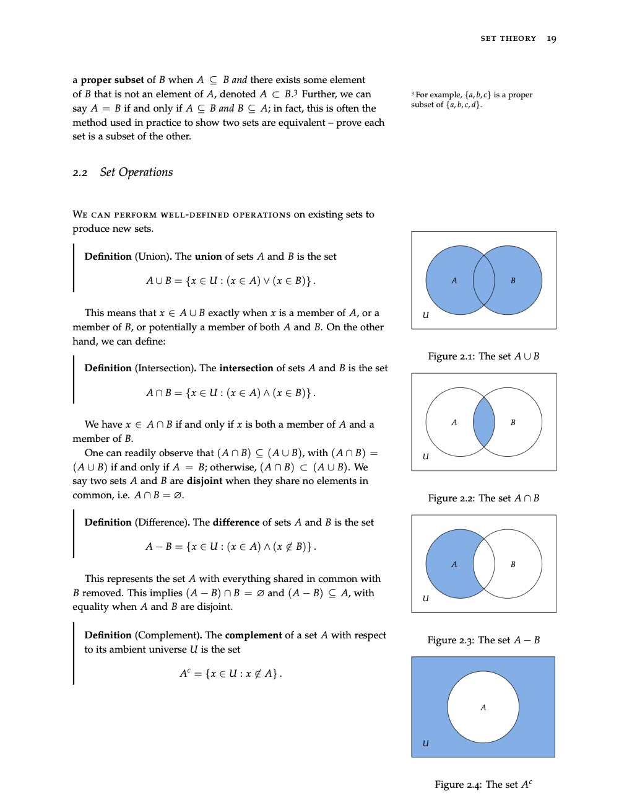
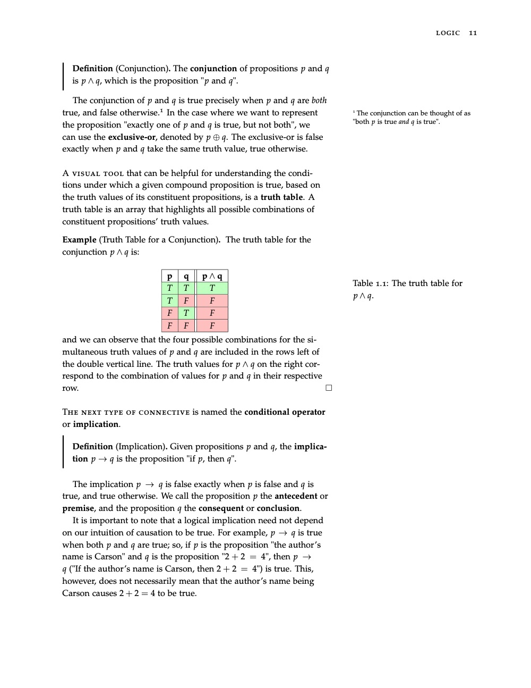
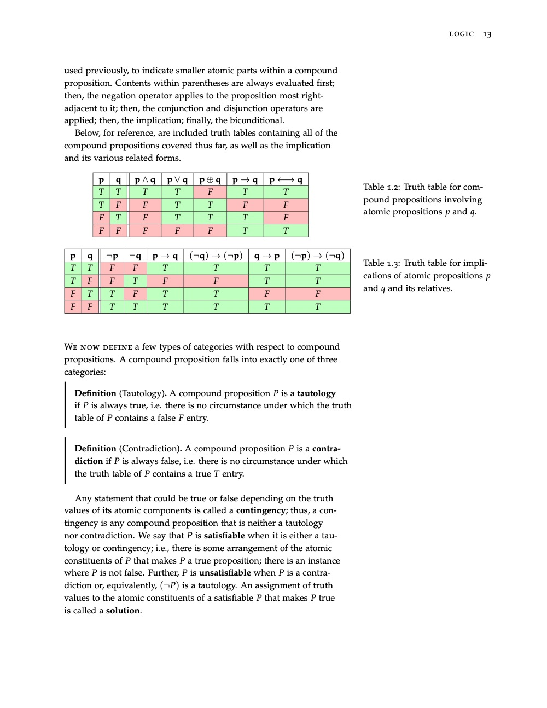
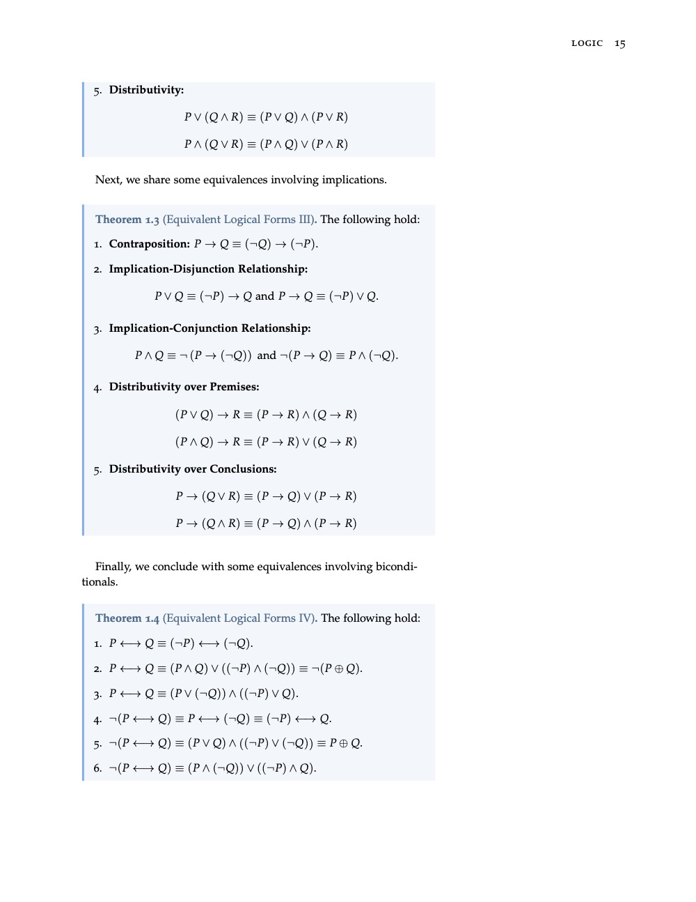

Math Tutoring
All levels, online over Zoom or in person in South Orange County, California.
$60 per hour online · $80 per hour in person
Pay after the lesson, by Zelle, PayPal or Apple Cash.
Need another length? Say so when you book.
Propose up to three times that work for you, and I'll confirm one or get in touch. Rather write? Email me at carsonm6719 [at] gmail [dot] com.
Subjects
At every level. Don't see yours? Ask when you book.
- Discrete Math
- Probability Theory
- Calculus
- Linear Algebra
- Precalculus
How I Teach
Placeholder: Carson will describe how he teaches here, in a few short paragraphs.
Carson MitchellMath tutor
One Problem, Step by Step
Scroll, or use the buttons, to go one step at a time.
Solve log₂ x + log₂(x − 2) = 3. Answer: x = 4 (the other root, −2, fails the requirement x > 2).
A Sample of How I Explain
I wrote Fundamentals of Mathematics for the GRE Quantitative Reasoning Section, free to read.
Read the Textbook (PDF)



Ready to start? Book a lesson or an intro call at the top of this page.